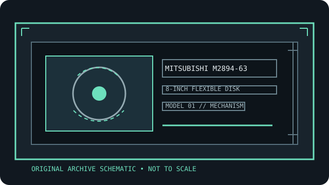

[ INDIVIDUAL COMPONENT // FLOPPY DRIVES ]
Mitsubishi M2894-63 8-inch floppy drive
This record identifies a real, model-specific 8-inch diskette mechanism. Format capacity and host fit depend on the documented revision, interface options, controller, recording mode, and media; values are not inferred from form factor alone.

IDENTIFICATION NOTE: Mitsubishi M2894-63 is a bare mechanism/drive model, not a generic PC floppy peripheral. Match the full label, PCB revision, connector and voltage configuration to the cited manual before connecting or servicing it.
Model specifications
| Catalog subcategory | 8-inch floppy mechanisms |
|---|---|
| Exact model / family | Mitsubishi M2894-63 8-inch floppy drive |
| Disk format and capacity | 8-inch, double-sided, double-density diskette mechanism; up to 77 cylinders per surface are described for common 8-inch geometries. Formatted bytes depend on the controller’s sector size, sectors per track, and format; do not treat a geometry as a universal capacity. |
| Host interface | Model-specific signal connector and separate power connection described in the Mitsubishi specification. Confirm connector/pinout, power connector, and any revision changes from the unit label and OEM manual before wiring; not a PC 34-pin drive. |
| Data rate | FM/MFM data rates are controller and recording-mode dependent; the 8-inch interface timing is specified in the OEM manual. Match its timing table to the selected recording mode rather than assuming a modern PC controller rate. |
| Drive select / jumpers | Customer installation options include drive selection and interface choices. Set one select position per controller channel, and match head/side selection and termination to the manual’s options table. |
| Dimensions / mounting | Use the M2894-63 physical-interface/mounting drawing for chassis clearance and screw locations; the drive variant and mount orientation must be verified from the original manual, not from another Mitsubishi model. |
| Power requirements | Use the M2894-63 electrical specification and connector diagram for required rails/current. Do not energize from a PC floppy harness until the exact power pins and unit label have been checked. |
| Controller / host compatibility | Requires a controller supporting the documented 8-inch FM/MFM signaling, timing, and disk geometry. Host compatibility is not implied by a 50-pin connector; establish density, format, and select wiring before use. |
Model-specific compatibility checks
- Record the complete model suffix, serial/date code, board revision, connector keying, and all drive-select or option links before installation.
- Confirm controller signaling, line termination, host drive-select assignment, recording density, sector geometry, and the manual’s power connector pinout as a single compatible configuration.
- Do not connect by connector shape alone. An 8-inch drive may require non-PC signal conventions, additional DC rails, or a mains-rated supply; follow the model documentation.
Preservation and safety notes
Photograph the model and PCB jumpers before changing any option shunts. Inspect the disk jacket and surface; do not insert moldy or shedding media. Use a sacrificial disk for alignment/read checks and preserve a raw flux or sector image before conversion.
For archival work, preserve original media in its native format, make a verified read-only acquisition first, checksum retained copies, and log the drive, controller, software, media condition, and any service or conversion performed.
Manufacturer manuals & archive sources
- Mitsubishi M2894-63 Floppy Specification (Bitsavers scan)Model-specific specification scan with mechanical, electrical, interface, and customer-option sections.
- Internet Archive record for the Mitsubishi M2894-63 specificationArchival record and access to the original scanned Mitsubishi specification.
Consult the exact model/revision manual before applying electrical or service values. Family references are useful only where their coverage matches the marked unit.